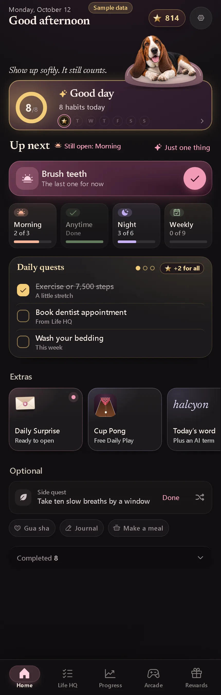

Home · Good Day achieved (starlit card)
- Area
- Good Day
- Screen 15 of 65
- home-good-day
- Capture
- full scrolling page (430×2610), demo time 16:00, sample data
- Image
- img/15-home-good-day.webp

Text on this screen
Good afternoon Dexter Napping after lunch 8 of 8 It’s a Good Day 8 habits done today M W T S S This morning · still open Brush teeth The last one for now Today’s habits 4 to go Just one thing Morning 2 of 3 Take vitamins, Make bed Anytime Now All done Exercise or 7,500 steps, No unnecessary spending, Read Tonight 3 of 6 Shower Stretch Prep for tomorrow Wear retainer, Floss, Brush teeth This week 0 of 9 Wash your bedding Clean the bathroom Tidy the fridge and pantry 6 more this week Optional 3 to try Gua sha Journal Make a meal Treats Just for fun Daily surprise Ready to open Free, once a day Free today Memory Today’s word insouciant adjective Weekly Bingo 8 of 25 3 days to play · ends Sunday night, Oct 18 8 tokens for the Arcade Bonus quests +2 for all three Small things outside your habits. New ones every day. Take ten slow breaths by a window A calm minute · +10 XP Done Book dentist appointment From Life HQ Done Make a cup of tea and drink it slowly Just for fun Done Life HQ 1 open · plan the week